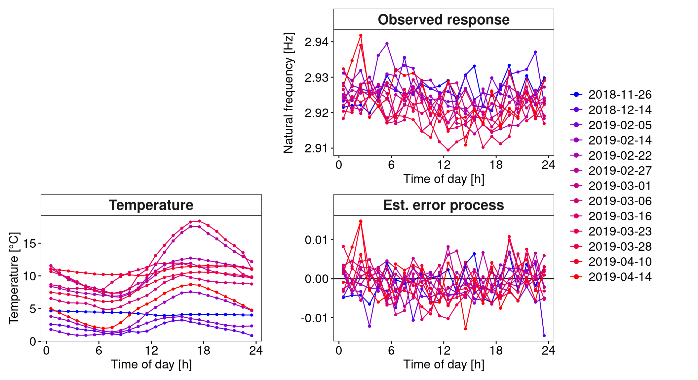
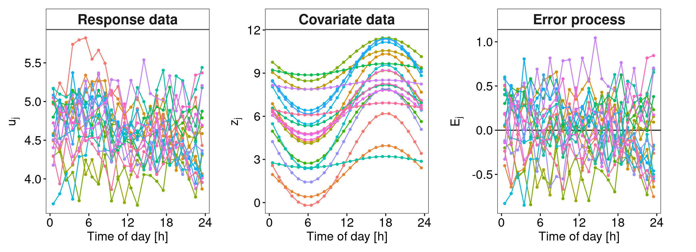

![]()
start_time <- Sys.time()Load libraries
# Package names
packages <- c("benchmarkme", "dplyr", "funData", "ggplot2", "patchwork", "purrr",
"segmented", "tidyr") # "png" only to include png files
# Install packages not yet installed
installed_packages <- packages %in% rownames(installed.packages())
if (any(installed_packages == FALSE)) {
install.packages(packages[!installed_packages])
}
# Packages loading
invisible(lapply(packages, library, character.only = TRUE))
librarian::shelf(benchmarkme, dplyr, funData, ggplot2, patchwork, png, purrr,
segmented, tidyr, quiet = TRUE)
theme_set(theme_bw() +
theme(panel.grid.major=element_blank(),
panel.grid.minor=element_blank(),
plot.title=element_text(size=28, hjust=.5),
plot.margin=margin(5,20,5,5, "pt"),
legend.title=element_blank(),
legend.text=element_text(size=14),
strip.background=element_rect(fill="white"),
strip.text=element_text(size=10, face="bold"),
strip.text.x=element_text(size=16),
axis.text=element_text(size=14),
axis.title=element_text(size=14),
axis.text.x=element_text(color="black"),
axis.text.y=element_text(color="black"),
axis.ticks=element_line(color="black")
)
)Introduction plot of functional profiles
Load data
dta <- readRDS("data/Dataset_bridge_KW51.RDS")
dta0 <- filter(dta, intervention==0) |> rename(temp=tBD31A, humid=rhBD31A)
M <- (sprintf("Mode_%02d", 1:14))
dtai <- dta0 |>
dplyr::select(td01, temp, humid, all_of(M), ind_day, ind_hour, date) |>
rename(mode=M[6]) |>
dplyr::select(temp, humid, mode, ind_day, ind_hour, td01, date) |>
filter(ind_day<=200)Piecewise linear fit
DAY <- seq(.5, 23.5, 1)/24 ## Day profile sequence for estimation and plotting
hseq <- DAY*24 ## sequence of hours per day
df <- dtai |>
dplyr::select(date, temp, mode) |>
mutate(td01=rep(hseq, 200))
df0 <- df |>
drop_na() |>
group_by(temp)
lm_fit_pw <- segmented::segmented(lm(mode~temp, data=df0))
predicted_df_pw <- data.frame(reg_pred=fitted.values(lm_fit_pw), temp=df0$temp)Plot Natural frequency
xlabels <- c(0, rep("",5), 6, rep("",5), 12, rep("",5), 18, rep("",4), 23)
exemp_days <- c(4, 22, 75, 84, 92, 97, 99, 104, 114, 121, 126, 139, 143)
cc <- scales::seq_gradient_pal("blue", "red", "Lab")(seq(0,1,length.out=length(exemp_days)))
xlabs <- seq(0,24,6)LABELS <- df0 |>
ungroup() |>
dplyr::select(date, temp) |>
pivot_longer(cols=!date, names_to="channels") |>
filter(channels%in%c("date", "temp")) |>
mutate(channels=factor(channels, labels="Temperature")) |>
mutate(tempdate=format(date, "%Y-%m-%d"), temphour=format(date, "%H")) |>
group_by(tempdate) |>
mutate(ind_day=factor(cur_group_id())) |>
filter(ind_day%in%exemp_days) |>
ungroup() |>
dplyr::select(date, temphour, ind_day) |>
filter(temphour=="12") |>
dplyr::select(-temphour) |>
transmute(m=format(date, "%Y-%m-%d")) |>
as.vector()p1 <- df0 |>
ungroup() |>
dplyr::select(date, mode, td01) |>
pivot_longer(cols=!c(date, td01), names_to="channels") |>
filter(channels%in%c("date", "mode")) |>
mutate(channels=factor(channels, labels="Observed response"),
tempdate=format(date, "%Y-%m-%d"), temphour=format(date, "%H")) |>
group_by(tempdate) |>
mutate(ind_day=factor(cur_group_id())) |>
filter(ind_day%in%exemp_days) |>
mutate(ind_day=factor(ind_day, labels=LABELS$m, levels=exemp_days)) |>
ggplot(aes(x=td01, y=value, group=ind_day, colour=ind_day)) +
geom_point(size=1) +
geom_line() +
scale_x_continuous(breaks=xlabs) +
scale_colour_manual(values=cc) +
facet_wrap(~channels, scales="free_y") +
labs(x="Time of day [h]", y="Natural frequency [Hz]") +
guides(colour=guide_legend(override.aes=list(size=2))) +
theme(legend.position = "none")Plot Covariate temperature
p2 <- df0 |>
ungroup() |>
dplyr::select(date, temp, td01) |>
pivot_longer(cols=!c(date, td01), names_to="channels") |>
filter(channels%in%c("date", "temp")) |>
mutate(channels=factor(channels, labels="Temperature"),
tempdate=format(date, "%Y-%m-%d"), temphour=format(date, "%H")) |>
group_by(tempdate) |>
mutate(ind_day=factor(cur_group_id())) |>
filter(ind_day%in%exemp_days) |>
mutate(ind_day=factor(ind_day, labels=LABELS$m, levels=exemp_days)) |>
ggplot(aes(x=td01, y=value, group=ind_day, colour=ind_day)) +
geom_point(size=1) +
geom_line() +
scale_x_continuous(name="Time of day [h]", breaks=xlabs) +
scale_colour_manual(values=cc) +
facet_wrap(~channels, scales="free_y") +
labs(y="Temperature [°C]") +
guides(colour=guide_legend(override.aes=list(size=2)))Plot Error process
p3 <- full_join(df0, predicted_df_pw, by="temp") |>
mutate(error_process=mode-reg_pred) |>
filter(date > as.POSIXct("23-11-2018", tz="UTC", format="%d-%m-%Y") &
date < as.POSIXct("22-04-2019", tz="UTC", format="%d-%m-%Y")) |>
pivot_longer(cols=!c(date, td01), names_to="channels") |>
filter(channels%in%c("date", "error_process")) |>
mutate(channels=factor(channels, labels="Est. error process"),
tempdate=format(date, "%Y-%m-%d"), temphour=format(date, "%H")) |>
group_by(tempdate) |>
mutate(ind_day=factor(cur_group_id())) |>
filter(ind_day%in%exemp_days) |>
mutate(ind_day=factor(ind_day, labels=LABELS$m, levels=exemp_days)) |>
ggplot(aes(x=td01, y=value, group=ind_day, colour=ind_day)) +
geom_hline(yintercept=0, color="black") +
geom_point(size=1) +
geom_line() +
scale_x_continuous(name="Time of day [h]", breaks=xlabs) +
scale_colour_manual(values=cc, name="Days", labels=c(LABELS)) +
facet_wrap(~channels, scales="free_y") +
labs(x="Time of day [h]", y="") +
guides(colour=guide_legend(override.aes=list(size=2)))Combine plots
bridge <- NULL #png::readPNG("KW51.png", native = TRUE)
design <- "AB
CD
"
wrap_elements(bridge) +
p1 +
p2 + p3 + plot_layout(design = design, guides = 'collect') 
Data generation plots of artificial profiles
fb1 <- function(z) exp(-z/2.2)-.5 ## Transformation function f(z)
meanU <- 5 ## Mean Temperature level
Tmin <- 0 ## Minimum Temperature
Tmax <- 12 ## Maximum Temperature
DAY <- seq(.5, 23.5, 1)/24 ## Day profile sequence for estimation and plotting
N <- 200 ## Number of profiles
hseq <- DAY*24 ## sequence of hours per day
argvals <- 2*pi*DAYset.seed(123456)
plain <- funData::simFunData(hseq, M=3, eFunType="Poly",
eValType="exponential", N=N)
noisy <- funData::addError(plain$simData, sd=.2)
# 3. simulate_covariate_mean_profile
covmeanprof <- sin(argvals)
# 4. simulate global intercept
iglobal <- outer(-.05, sin(argvals*1/2)+cos(argvals*2))
aldf <- data.frame(iglobal-mean(iglobal))
## 5. Simulate complete data set
## 5.1 Global intercept (same profile for N days)
al <- purrr::map_dfr(seq_len(N),~aldf) |>
t() |>
data.frame() |>
'colnames<-' (c(sprintf("%03d", 1:N))) |>
mutate(ind_hour=row_number()) |>
pivot_longer(cols=!ind_hour, names_to="ind_day", values_to="alpha") |>
arrange(ind_day)
## 5.2 Covariate data
z <- sapply(1:200, function(i) -1*runif(1, 0, 4)*covmeanprof+runif(1, 2, 10)) |>
data.frame()
## 5.3 Structural component
w <- sapply(1:24, function(j) noisy@X[, j]) |>
t() |>
data.frame() |>
'colnames<-' (c(sprintf("%03d", 1:N))) |>
mutate(ind_hour=row_number()) |>
pivot_longer(cols=!ind_hour, names_to="ind_day", values_to="w") |>
arrange(ind_day)
## 5.4 Compile complete data set
simdf <- z |>
'colnames<-' (c(sprintf("%03d", 1:N))) |>
mutate(ind_hour=row_number()) |>
pivot_longer(cols=!ind_hour, names_to="ind_day", values_to="z") |>
arrange(ind_day) |>
mutate(fz=fb1(z), meanU=meanU, intercept=al$alpha) |>
full_join(w, by=c("ind_hour", "ind_day")) |>
group_by(ind_day) |>
mutate(u=intercept+fz+w+meanU, td01=hseq) |>
ungroup()s <- sprintf("%003d", 1:200)
t <- sample(s, size=20)
xlabs <- seq(0,24,6)
p1 <- simdf |>
filter(ind_day%in%t) |>
mutate(channel=factor(1, labels="Response data")) |>
ggplot(aes(x=td01, y=u, group=ind_day, colour=ind_day)) +
geom_point(size=1) +
geom_line() +
facet_wrap(~channel) +
labs(y=bquote(u[j])) +
scale_color_discrete(name="Days") +
scale_x_continuous(name="Time of day [h]", breaks=xlabs) +
theme(legend.position="none")
p2 <- simdf |>
filter(ind_day%in%t) |>
mutate(channel=factor(1, labels="Covariate data")) |>
ggplot(aes(x=td01, y=z, group=ind_day, colour=ind_day)) +
geom_point(size=1) +
geom_line() +
facet_wrap(~channel) +
labs(y=bquote(z[j])) +
scale_color_discrete(name="Days") +
scale_x_continuous(name="Time of day [h]", breaks=xlabs) +
theme(legend.position="none")
p3 <- simdf |>
mutate(error=u-fz-intercept-meanU) |>
filter(ind_day%in%t) |>
mutate(channel=factor(1, labels="Error process")) |>
ggplot(aes(x=td01, y=error, group=ind_day, colour=ind_day)) +
geom_hline(yintercept=0) +
geom_point(size=1) +
geom_line() +
facet_wrap(~channel) +
labs(y=bquote(E[j])) +
scale_color_discrete(name="Days") +
scale_x_continuous(name="Time of day [h]", breaks=xlabs) +
theme(legend.position="none") p1 + p2 + p3 + plot_layout(guides = 'collect', nrow=1)
Computational and session information
Hardware information:
get_cpu()$vendor_id
[1] "GenuineIntel"
$model_name
[1] "Intel(R) Core(TM) i7-8565U CPU @ 1.80GHz"
$no_of_cores
[1] 8get_ram()16.4 GBComputation time:
print(paste("Computation time:", round(Sys.time() - start_time, 2)[[1]], "seconds"))[1] "Computation time: 5.52 seconds"Session information:
sessionInfo()R version 4.3.1 (2023-06-16)
Platform: x86_64-pc-linux-gnu (64-bit)
Running under: Debian GNU/Linux 11 (bullseye)
Matrix products: default
BLAS: /usr/lib/x86_64-linux-gnu/openblas-pthread/libblas.so.3
LAPACK: /usr/lib/x86_64-linux-gnu/openblas-pthread/libopenblasp-r0.3.13.so; LAPACK version 3.9.0
locale:
[1] LC_CTYPE=en_GB.UTF-8 LC_NUMERIC=C
[3] LC_TIME=en_GB.UTF-8 LC_COLLATE=en_GB.UTF-8
[5] LC_MONETARY=en_GB.UTF-8 LC_MESSAGES=en_GB.UTF-8
[7] LC_PAPER=en_GB.UTF-8 LC_NAME=C
[9] LC_ADDRESS=C LC_TELEPHONE=C
[11] LC_MEASUREMENT=en_GB.UTF-8 LC_IDENTIFICATION=C
time zone: Europe/Berlin
tzcode source: system (glibc)
attached base packages:
[1] stats graphics grDevices utils datasets methods base
other attached packages:
[1] png_0.1-7 tidyr_1.1.2 segmented_1.6-4
[4] nlme_3.1-162 MASS_7.3-58.3 purrr_1.0.2
[7] patchwork_1.2.0.9000 ggplot2_3.5.1 funData_1.3-8
[10] dplyr_1.1.2 benchmarkme_1.0.8
loaded via a namespace (and not attached):
[1] librarian_1.8.1 utf8_1.2.4 generics_0.1.3
[4] stringi_1.5.3 lattice_0.20-45 digest_0.6.35
[7] magrittr_2.0.3 evaluate_0.23 grid_4.3.1
[10] iterators_1.0.13 fastmap_1.1.1 foreach_1.5.1
[13] doParallel_1.0.17 jsonlite_1.8.8 Matrix_1.5-3
[16] httr_1.4.7 fansi_1.0.6 scales_1.3.0
[19] codetools_0.2-19 abind_1.4-5 cli_3.6.2
[22] rlang_1.1.3 ellipsis_0.3.2 munsell_0.5.1
[25] splines_4.3.1 withr_3.0.0 yaml_2.3.8
[28] tools_4.3.1 parallel_4.3.1 colorspace_2.1-0
[31] vctrs_0.6.5 R6_2.5.1 lifecycle_1.0.4
[34] stringr_1.4.0 htmlwidgets_1.6.4 pkgconfig_2.0.3
[37] pillar_1.9.0 gtable_0.3.4 glue_1.7.0
[40] benchmarkmeData_1.0.4 xfun_0.43 tibble_3.2.1
[43] tidyselect_1.2.0 rstudioapi_0.13 knitr_1.45
[46] farver_2.1.1 htmltools_0.5.8.1 labeling_0.4.3
[49] rmarkdown_2.26 compiler_4.3.1 Reuse
Citation
BibTeX citation:
@online{wittenberg2024,
author = {Wittenberg, Philipp and Neumann, Lizzie and Mendler,
Alexander and Gertheiss, Jan},
title = {Covariate-Adjusted {Functional} {Data} {Analysis} for
{Structural} {Health} {Monitoring}},
date = {2024-10-07},
doi = {10.48550/arXiv.2408.02106},
langid = {en}
}
For attribution, please cite this work as:
Wittenberg, Philipp, Lizzie Neumann, Alexander Mendler, and Jan
Gertheiss. 2024. “Covariate-Adjusted Functional Data Analysis for
Structural Health Monitoring.” arXiv:2408.02106. October 7, 2024.
https://doi.org/10.48550/arXiv.2408.02106.